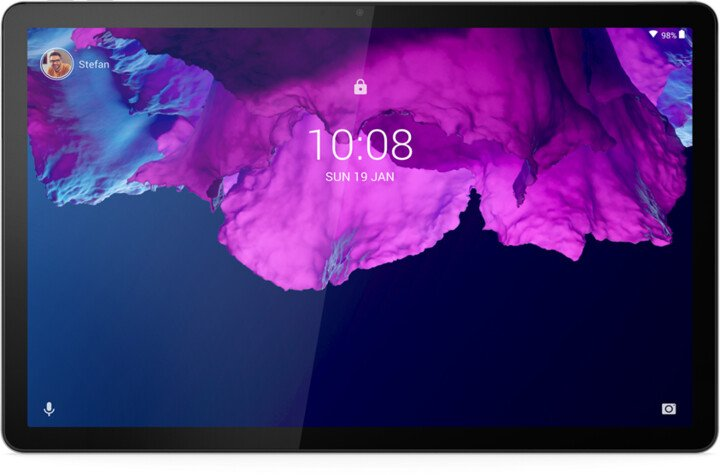
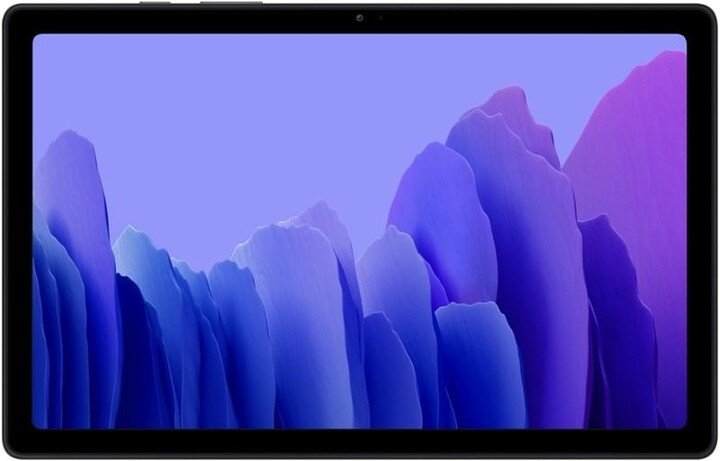
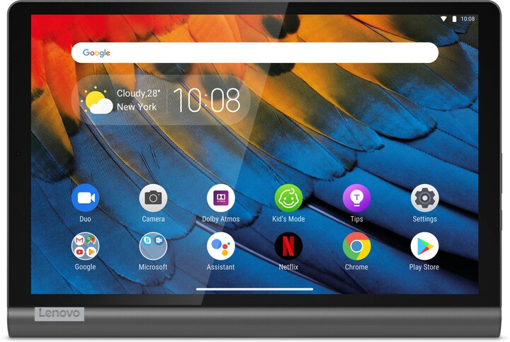

Tablet pro celou rodinu a skvělou zábavu se zvukovou technologií Dolby Atmos. Dotykový 10.3" displej s rozlišením 1920 x 1200 bodů, 8jádrový procesor MediaTek Helio P22T, 4GB operační paměti, 64GB interní paměť, WiFi ac, Bluetooth 5.0, přední 5Mpx a zadní 8Mpx kamery, USB Type-C, baterie 5000mAh, OS Android.
5 390 Kč
Lenovo TAB P11

Výkonný tablet pro celou rodinu a skvělou zábavu se zvukovou technologií Dolby Atmos. Podpora připojení LTE. Dotykový 11" IPS displej, rozlišení 2000 x 1200 bodů, 8jádrový procesor Qualcomm Snapdragon 662 až 2GHz, 6GB operační paměti, 128GB interní paměť, WiFi ac, Bluetooth, GPS/Glonass, přední 8Mpx a zadní 13Mpx kamery, USB Type-C, baterie 7500mAh, OS Android.
8 490 Kč
Samsung Galaxy Tab A7 T500N

Odolný tablet s širokoúhlým dynamickým 10,4" displejem, rozlišení 2000 × 1200 TFT. Tenký design, 7 mm. Vysoký výkon. Kovové tělo. Rychlý 8jádrový procesor. Qualcomm Snapdragon 662 2 GHz. RAM 3 GB. Interní paměť 32 GB. Paměťová karta až 1 TB. Wi-Fi. Bluetooth. Podpora rychlého 15 W dobíjení. Baterie s kapacitou 7 040 mAh.
5 990 Kč
Lenovo Yoga Smart Tab

Tablet plný zábavy a vestavěným asistentem Google pro ovládání chytré domácnosti. Dotykový 10.1" IPS displej, Full HD+ rozlišení 1920 x 1200 bodů, 8jádrový procesor Qualcomm Snapdragon 439 s frekvenci až 2 GHz, 4GB operační paměti, 64GB interní paměť, slot microSD, WiFi ac, Bluetooth 4.2, GPS/ Glonass/ BDS, přední 4Mpx a zadní 8Mpx kamery.